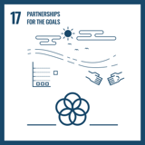

Dr. Saravanakumar Gurusamy
Associate Professor, Department of Electrical and Electronics Engineering
Presidency University, Bengaluru, India
Inspiring and motivating young technical minds through research for the betterment and advancement of humanity.
About
Dr. Saravanakumar Gurusamy is an Associate Professor of Electrical and Electronics Engineering at Presidency University, Bengaluru, with more than 18 years of teaching and 8 years of research experience in instrumentation, control, robotics and automation. He holds a Ph.D. in Instrumentation and Control Engineering from Kalasalingam Academy of Research and Education, an M.Tech in Control and Instrumentation Engineering (First Class with Distinction) from Thiagarajar College of Engineering, and a B.E. in Electronics and Instrumentation Engineering from National Engineering College.
From 2019 to 2025 he was Associate Professor of Electrical Automation and Control Technology at the FDRE Technical and Vocational Training Institute (FTI), Addis Ababa, where he taught and coordinated the MSc programme, revised postgraduate curricula, supervised more than 40 MSc theses, and was a member of the LUBAN Workshop Robotics and AI Centre. Earlier he taught at the University of Gondar, where he set up control, instrumentation and automation laboratories and mentored the RoboSoccer team to second prize at AfRoboCup 2018, and at Kalasalingam Academy of Research and Education, where he coordinated the NI LabVIEW Academy.
His research covers metaheuristic algorithms for system identification and PID controller tuning, model predictive and adaptive control, autonomous vehicles, mobile robotics and digital twins. He is a Senior Member of IEEE and serves as Secretary of the IEEE Ethiopia Subsection.
Research interests
Publications
21 journal articles and 11 conference papers (2012–2025). For citations and the latest list see Google Scholar.
2025
- Journal · SCI (Q1)
Fuzzy Sliding Mode Control for Dynamic Walking Assistance in Lower Limb Exoskeletons
T. Hailemariam Gebrecherkos, A. Gebrehiwot Berhe, Saravanakumar Gurusamy and C. M. AbdissaIEEE Access, vol. 13, pp. 161235-161249, 2025
2024
- Journal · SCI (Q1)
Frequency-hopping along with resolution-turning for fast and enhanced reconstruction in ultrasound tomography
Quang-Huy Tran, Bhisham Sharma, Luong Thi Theu, Duc-Tan Tran, Subrata Chowdhury, Chandran Karthik, and Saravanakumar GurusamyScientific Reports, vol. 14, no. 1, pp. 15483, 2024
2023
- Journal · Scopus (Q2)
Prediction of Flank Wear during Turning of EN8 Steel with Cutting Force Signals Using a Deep Learning Approach
S. K. Thangarasu, T. Mohanraj, K. Devendran, M. Rajalakshmi, S. Chowdhury, and Saravanakumar GurusamyMathematical Problems in Engineering, vol. 2023, pp. 1–12, 2023
- Journal · SCI (Q1)
Tikhonov Regularization and Perturbation-Level Tuning for the CNM in Pharmacokinetics
Luong Thi Theu, Quang-Huy Tran, Bhisham Sharma, Duc-Tan Tran, Subrata Chowdhury, Chandran Karthik, and Saravanakumar GurusamyIEEE Access, vol. 11, pp. 30057–30068, 2023
2022
- Journal · Scopus (Q3)
Parameter Evaluation of a Nonlinear Muskingum Model Using a Constrained Self-Adaptive Differential Evolution Algorithm
K. M. A. Kadhar, N. Natarajan, M. Vasudevan, and Saravanakumar GurusamyWater Practice and Technology, vol. 17, no. 11, pp. 2396–2407, 2022
- Journal · Scopus (Q2)
Machine Learning Approach on Time Series for PV-Solar Energy
S. Sivakumar, B. Neeraja, M. Jamuna Rani, Harishchander Anandaram, S. Ramya, Girish Padhan, and Saravanakumar GurusamyAdvances in Materials Science and Engineering, 2022
2021
- Journal · Scopus (Q2)
Current-Fed Bidirectional DC–DC Converter Topology for Wireless Charging System Electrical Vehicle Applications
P. S. Subudhi, M. Thilagaraj, S. Ganesh, S. Diwakaran, P. Naveen, Saravanakumar Gurusamy, and M. Pallikonda RajasekaranWireless Communications and Mobile Computing, 2021
- Journal · Scopus (Q2)
Eye-Movement Signal Classification for Developing Human–Computer Interface Using Electrooculogram
M. Thilagaraj, B. Dwarakanath, S. Ramkumar, K. Karthikeyan, A. Prabhu, Saravanakumar Gurusamy, M. P. Rajasekaran, and N. ArunkumarJournal of Healthcare Engineering, 2021
- Journal · SCI (Q1)
A Novel Method for Multivariant Pneumonia Classification Based on Hybrid CNN–PCA Feature Extraction Using Extreme Learning Machine with CXR Images
Goni M. Nahiduzzaman, M. S. Anower, M. R. Islam, M. Ahsan, J. Haider, Saravanakumar Gurusamy, R. Hassan, and M. R. IslamIEEE Access, vol. 10, pp. 227–235, 2021
- Journal · SCI (Q3)
Estimating the Survival of Aqua Fauna by Image‑Analysis Techniques from Video Sequences of Pond Aquaculture
S. R. Palani, D. Durairaj, K. Balasubramaniyan, and Saravanakumar GurusamyAgroLife Scientific Journal, vol. 10, no. 1, pp. 227–235, 2021
- Journal · SCI (Q1)
A Hybrid Personalized Scientific Paper Recommendation Approach Integrating Public Contextual Metadata
Nazmus Sakib, Rodina Binti Ahmad, Mominul Ahsan, Md Abdul Based, Khalid Haruna, Julfikar Haider, and Saravanakumar GurusamyIEEE Access, 2021
- Journal · SCI (Q1)
Photonic Crystal Fiber‑Based Biosensor for Pseudomonas Bacteria Detection: A Simulation Study
N. Jahan, M. M. Rahman, M. Ahsan, M. A. Based, M. M. Rana, Saravanakumar Gurusamy, and J. HaiderIEEE Access, vol. 9, pp. 42206–42215, 2021
2020
- Journal · SCI (Q1)
Modified Cascade Controller Design for Unstable Processes with Large Dead Time
K. Chandran, R. Murugesan, Saravanakumar Gurusamy, Asan K. Mohideen, S. Pandiyan, A. Nayyar, M. Abouhawwash, and Y. NamIEEE Access, vol. 8, pp. 157022–157036, 2020
2019
- Conference · Scopus
Life-Time Maximization of Wireless Sensor Network Using Jaya Algorithm
C. Jency, Saravanakumar Gurusamy, and K. M. A. Kadher2019 IEEE International Conference on Clean Energy and Energy Efficient Electronics Circuit for Sustainable Development (INCCES), 2019
- Journal
Environmental Condition Monitoring System of Textile Industry for Sustainable Development Goal
Saravanakumar Gurusamy, C. V. Baalachandar, and Mohaideen Abdul KadharInternational Journal of Innovative Technology and Exploring Engineering, vol. 9, pp. 986–991, 2019
2018
- Journal · Scopus (Q4)
Path‑Planning in Autonomous Electric Vehicle Using Nonlinear State Estimation and Behaviour‑Based Controllers
B. Subathra, Saravanakumar Gurusamy, K. Ramkumar, S. Srinivasan, and N. MuthukumarInternational Journal of Vehicle Systems Modelling and Testing, vol. 12, pp. 304–319, 2018
- Journal · Scopus
Adaptive Controller for Networked Control Systems Subjected to Random Communication Delays
Seshadhri Srinivasan, Saravanakumar Gurusamy, B. Subathra, N. Sundarajan, U. Kotta, and S. RamasamyAdvances in Intelligent Systems and Computing, vol. 633, pp. 78–94, 2018
2016
- Conference · Scopus
Extended Kalman Filter Based Path- Planning Algorithm for Autonomous Vehicles with I2V Communication
D. Ganesha Perumal, B. Subathra, G. Saravanakumar, and Seshadhri SrinivasanIFAC-PapersOnLine, 2016
- Conference · Scopus
Dynamic State Transition Algorithm (DSTA) Based Tuning of Centralized PID Controller for the Distillation Column
Saravanakumar Gurusamy, K. Valarmathi, M. Pallikonda Rajasekaran, Seshadhri Srinivasan, Willjuice M. Iruthayarajan, and Valentina E. BalasSpringer International Conference on Soft Computing Systems (ICSCS), 2016
- Journal · SCI (Q2)
MILP‑Based Autonomous Vehicle Path‑Planning Controller for Unknown Environments with Dynamic Obstacles
D. Ganesha Perumal, Seshadhri Srinivasan, B. Subathra, Saravanakumar Gurusamy, and Ramakalyan AyyagariInternational Journal of Heavy Vehicle Systems, vol. 23, no. 4, pp. 350–369, 2016
- Journal · Scopus (Q3)
Lagrangian‑Based State Transition Algorithm for Tuning Multivariable Decentralized Controller
Seshadhri Srinivasan, Saravanakumar Gurusamy, K. Valarmathi, and Willjuice M. IruthayarajanInternational Journal of Advanced Intelligence Paradigms, 2016
2015
- Conference · Scopus
Modelling Time-Varying Delays in Networked Automation Systems with Heterogeneous Networks Using Machine Learning Techniques
Seshadhri Srinivasan, Furio Buonopane, Saravanakumar Gurusamy, B. Subathra, and Srini Ramaswamy2015 IEEE International Conference on Automation Science and Engineering (CASE), 2015
- Conference · Scopus
On Simulating Processor Schedules and Network Protocols within CPS Using TrueTime
Sreram Balasubramaniyan, B. Subathra, R. C. Hemesh, Saravanakumar Gurusamy, and Seshadhri Srinivasan2015 IEEE International Conference on Computational Intelligence and Computing Research (ICCIC), 2015
- Conference · Scopus
State Transition Algorithm (STA) Based Tuning of Integer and Fractional-Order PID Controller for Benchmark System
Saravanakumar Gurusamy, K. Valarmathi, M. Pallikonda Rajasekaran, Seshadhri Srinivasan, and K. A. Mohaideen2015 IEEE International Conference on Computational Intelligence and Computing Research (ICCIC), 2015
- Journal · SCI (Q2)
Tuning Multivariable Decentralized PID Controller Using State Transition Algorithm
Saravanakumar Gurusamy, K. Valarmathi, M. Pallikonda Rajasekaran, Seshadhri Srinivasan, and Willjuice M. IruthayarajanStudies in Informatics and Control, vol. 24, no. 4, pp. 367–378, 2015
- Journal
An Approach for Short‑Term Load Forecasting Using RBFNN in the Smart Grid
Satheesh Kumar, Saravanakumar Gurusamy, B. Subathra, and Seshadhri SrinivasanInternational Journal of Control Theory and Applications, vol. 8, no. 5, pp. 2169–2177, 2015
2014
- Conference · Scopus
Nonlinear State Estimation Based Predictive Path-Planning Algorithm Using Infrastructure-to-Vehicle (I2V) Communication for Intelligent Vehicle
D. Ganesha Perumal, Saravanakumar Gurusamy, B. Subathra, Seshadhri Srinivasan, and Srini RamaswamyProceedings of the 2nd International Conference on Emerging Research in Computing, Information, Communication and Applications (ERCICA), 2014
2013
- Conference · Scopus
Temperature Control of Greenhouse System Using Evolutionary Computation
R. Umashankari, K. Valarmathi, and Saravanakumar Gurusamy2013 International Conference on Energy Efficient Technologies for Sustainability (ICEETS), 2013
- Journal · SCI (Q1)
Real‑Coded Genetic Algorithm for System Identification and Tuning of a Modified Model Reference Adaptive Controller for a Hybrid Tank System
Asan Mohideen, Saravanakumar Gurusamy, K. Valarmathi, D. Devaraj, and T. K. RadhakrishnanApplied Mathematical Modelling, vol. 37, no. 6, pp. 3829–3847, 2013
2012
- Conference
Nonlinear Identification of pH Processes Using an NNARX Model
M. Rajalakshmi, Saravanakumar Gurusamy, and C. KarthikProceedings of the International Conference on Computing and Control Engineering (ICCCE), 2012
- Conference
Subspace Identification and Controller Design for a Distillation Column
S. Meenakshi and Saravanakumar GurusamyInternational Conference on Computing and Control Engineering (ICCCE), 2012
- Conference
Speed Control of Three-Phase Induction Motor Using a Digital Signal Processor (TMS320F2407)
K. Mohaideen Abdul Kadhar, M. Saravanan, and Saravanakumar GurusamyInternational Conference on Recent Advancements in Electrical Sciences (ICRAES), 2012
No publications match your search.
Teaching
Undergraduate and postgraduate courses and laboratories taught at KARE (India), the University of Gondar and FTI (Ethiopia). Open a course for notes, slides, live simulations and animations.
Undergraduate
- Control SystemsLive simulations
- Control System Design
- Process Dynamics and Control
- Process Control Fundamentals
- Process Control Laboratory
- Industrial Automation
- Programmable Logic Controllers
- Introduction to Robotics
- Robotics and Automation
- Electrical Measurement and Instrumentation
- Electrical and Electronics Instrumentation
- Instrumentation and Control in Petrochemical Industries
- Microprocessors and Microcontrollers
- Network Analysis and Synthesis
- Virtual Instrumentation
- Digital Control Systems
Postgraduate
Experience & Education
Positions
- 2025 – PresentAssociate Professor, Electrical and Electronics EngineeringPresidency University, Bengaluru, India
- 2019 – 2025Associate Professor, Electrical Automation and Control TechnologyFDRE Technical and Vocational Training Institute (FTI), Addis Ababa, Ethiopia
- 2018 – 2019Senior Assistant ProfessorKalasalingam Academy of Research and Education, Srivilliputhur, India
- 2014 – 2018Lecturer, Electrical and Computer EngineeringUniversity of Gondar, Ethiopia
- 2009 – 2014Assistant Professor, Instrumentation and Control EngineeringKalasalingam Academy of Research and Education, Srivilliputhur, India
- 2004 – 2007Lecturer, Electronics and CommunicationLakshmi Ammal Polytechnic College, Kovilpatti, India
Education
- 2011 – 2017Ph.D., Instrumentation and Control EngineeringKalasalingam Academy of Research and Education
Thesis: Metaheuristic Algorithms for the Identification of Nonlinear Systems and Multivariable PID Controller Tuning - 2007 – 2009M.Tech, Control and Instrumentation EngineeringThiagarajar College of Engineering · First Class with Distinction
Thesis: Evolutionary Algorithm based Volterra System Identification - 2000 – 2004B.E., Electronics and Instrumentation EngineeringNational Engineering College · First Class
Awards & recognition
- Best Paper Award, ICSGSM 2021
- Best Paper Award, ICSCS 2016
- Young Scientist Fellowship, Tamil Nadu State Council for Science and Technology (2011)
- Second Prize, paper presentation, RAYS 2001, Thiagarajar College of Engineering
- Mentor of the RoboSoccer team, 2nd prize at AfRoboCup 2018
Service & Expertise
Leadership & service
- Secretary, IEEE Ethiopia Subsection (2023 – 2027)
- PG coordinator, MSc Electrical Automation and Control Technology, FTI
- Curriculum design: MSc Instrumentation and Control, BSc Electrical and Electronics Technology, BSc Biomedical Engineering
- Set up Measurement & Instrumentation, Process Control and Industrial Automation labs and a Robotics Center at the University of Gondar
- NI LabVIEW Academy coordinator; placement coordinator; NSS programme officer
Professional memberships
- Senior Member, IEEE (Control Systems, Robotics & Automation, Industry Applications societies; Sensors and Systems Councils)
- Life Member, Indian Society for Technical Education (ISTE)
- Member, American Society for Engineering Education (ASEE)
- Life Member, International Association of Engineers (IAENG)
Technical expertise
Invited talks
- Keynote, International Conference on Artificial Intelligence & Digital Twin Technology, Sivakasi (April 2023): Reinforcement Learning using the Julia Language
- FDP session: Quantum Computing, Research Perspective in Healthcare Applications (December 2024)
- Guest lecture, Virtual Instrumentation using LabVIEW, M. Kumarasamy College of Engineering (January 2013)
- Guest lecture, Fuzzy Optimization for Image Processing and Control System Applications, Sethu Institute of Technology (December 2012)
- Workshops on LabVIEW programming, Kalasalingam University (2012, 2013)
Sustainable Development Goals

Improving the quality and reach of engineering education.

Solar PV, solar thermal and electric stove training with GIZ-EnDev Ethiopia, and research on smart grids.

International collaboration and MoUs between universities in Ethiopia, India and Romania.
Contact
Office
Department of Electrical and Electronics EngineeringPresidency University
Bengaluru, India